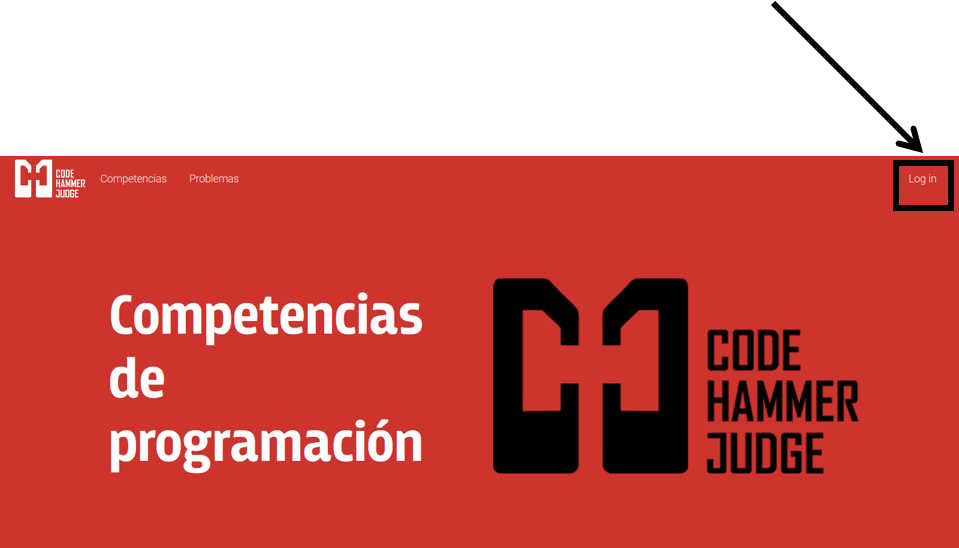
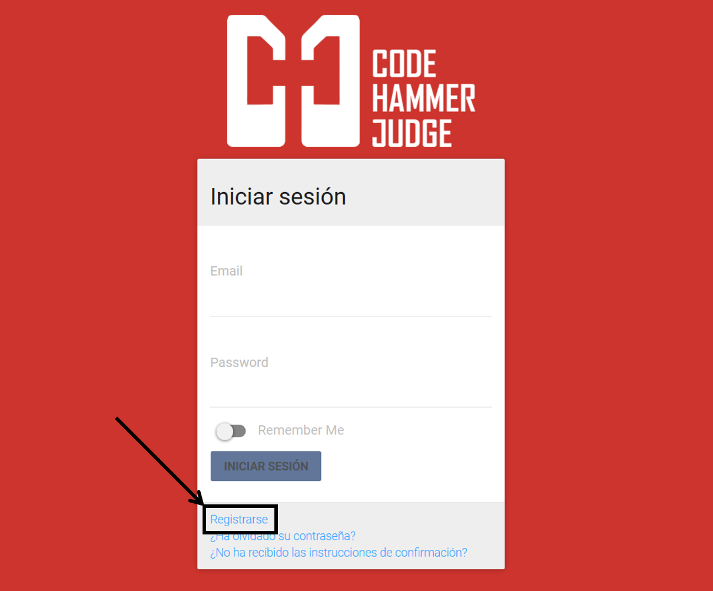
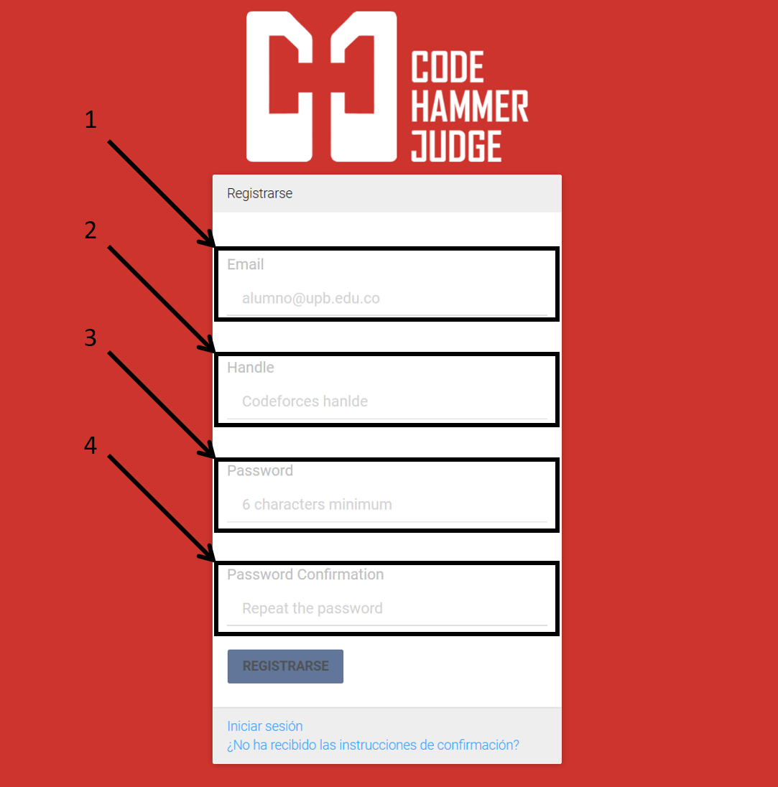
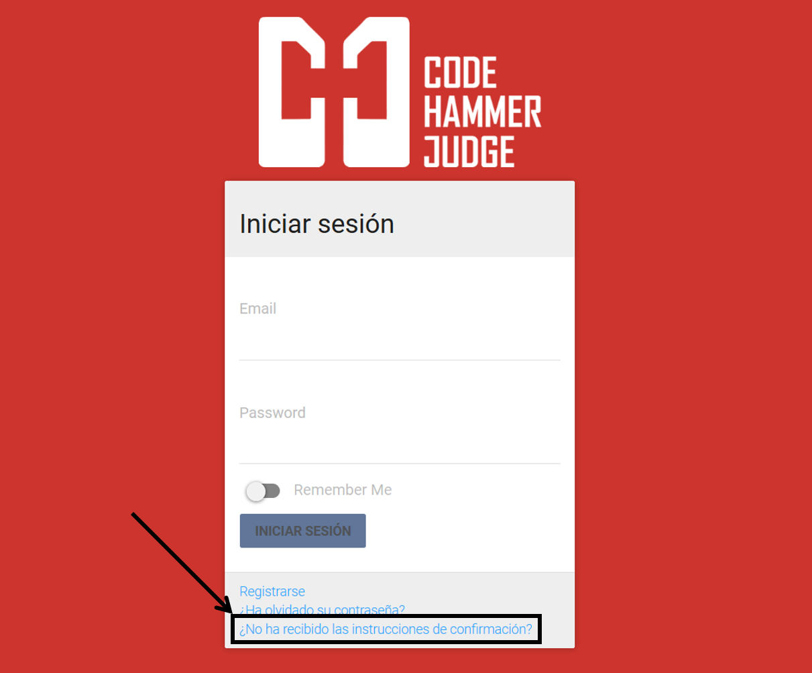
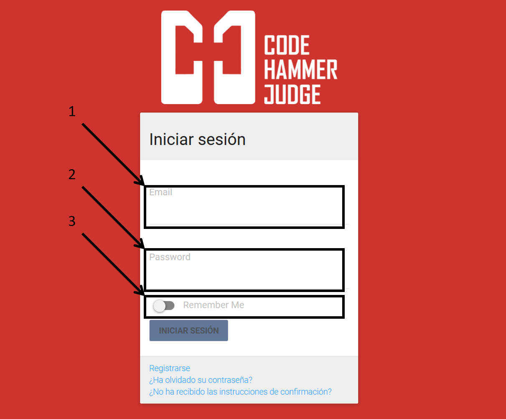
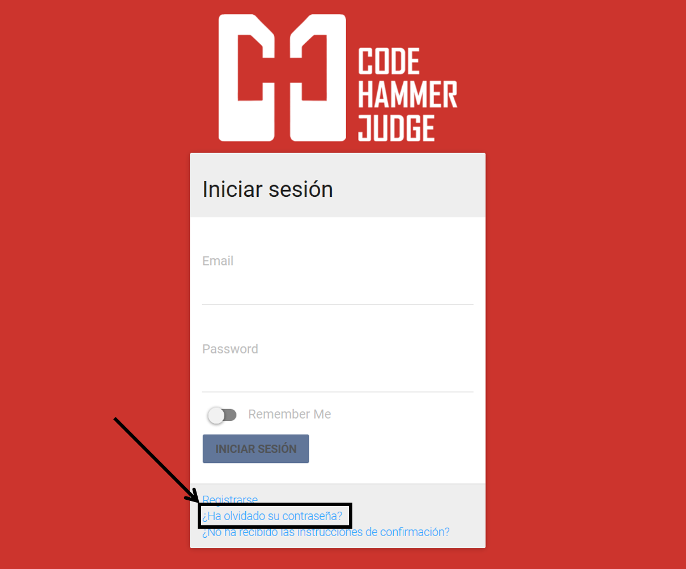

Para la creación de una cuenta, seleccione la opción "Login" en la página principal.
Seleccione la opción "Registrarse":
Ingrese los datos solicitados en el formulario:
Corresponde al email del usuario con el cual se realizará la autenticación, se recomienda utilizar el email proporcionado por la universidad.
Si posee un usuario de codeforces, por favor ingrese el Handle del usuario correspondiente. Este campo no es obligatorio y puede actualizarse más adelante
Ingrese la contraseña deseada para su cuenta.
Ingrese nuevamente la contraseña deseada para su cuenta.
Finalmente presione el botón "Registrarse". Un correo se enviará a la dirección de correo electrónico registrada con un link de confirmación de cuenta.
Si no ha recibido el correo de confirmación de cuenta puede dirigirse a la opción "¿No ha recibido instrucciones de confirmación?" en donde encontrará ayuda para activar su cuenta.
Para iniciar sesión, seleccione la opción "Login" en la página principal.
Ingrese los datos solicitados en el formulario:
Corresponde al email del usuario con el cual se realizó la creación de la cuenta.
Ingrese la contraseña establecida para su cuenta.
Finalmente presione el botón "Iniciar sesión".
En caso de olvidar su contraseña puede solicitar una recuperación de contraseña en la opción "¿Ha olvidado su contraseña?". Un link de recuperación de contraseña se enviará al correo electrónico ingresado.
